We build and train AI that truly understands the entire automotive insurance ecosystem — from every scratch and component to every claim, repair note, and document. Ethical, transparent, and fair.
MARS is a state-of-the-art deep learning model for car damage instance segmentation. It stands for:
MMask
AAttention
RRefinement
SSequential Quadtree
🕰️ MARSAIL Lab (2022 – 2026)
MARSAIL was built and developed over 4 years and 7 months, spanning from 2022 to 2026, advancing AI-driven automation for automotive insurance — integrating computer vision, intelligent segmentation, transformer architectures, and decision intelligence systems.
As of July 2026, MARSAIL stands as a fully realized research chapter — an independent AI initiative shaped by long-term vision, technical precision, and an unwavering commitment to meaningful innovation.
— Dr. Teerapong PanboonyuenFounder & Research Architect · January 2022 – July 2026.
MARSAIL's research and real-world AI systems have received recognition from leading technology media, highlighting our ability to translate top-tier academic research into deployable, industry-grade innovation.
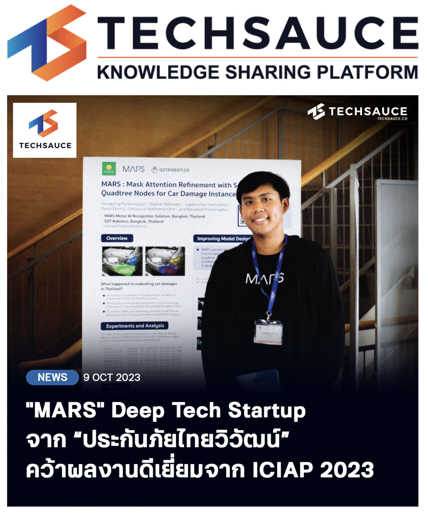
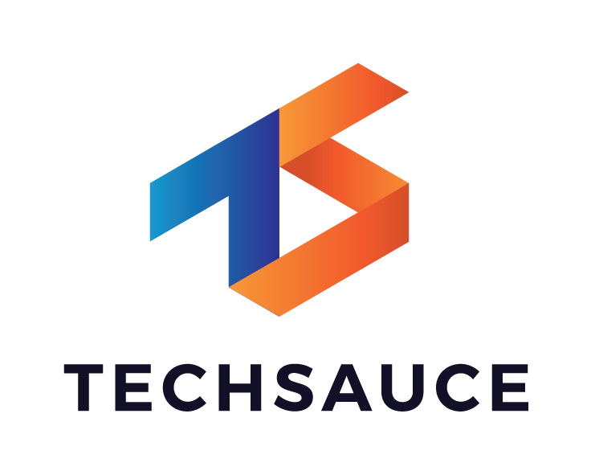
Featured News · October 2023
"MARS" Deep Tech Startup from Thaivivat Insurance Recognized at ICIAP 2023
Techsauce featured MARS as a deep-tech startup from Thaivivat Insurance, spotlighting award-winning research presented at the International Conference on Image Analysis and Processing (ICIAP 2023).
Dr. Teerapong Panboonyuen, Head of AI at MARSAIL, was invited as a panel speaker to discuss AI-driven transformation, intelligent automotive ecosystems, and future mobility technologies.
Panel Session · 15 May 2026 · 11:30 AM
AutoTech in Transition: Current Trends & Future Trajectories
Exploring how innovation is reshaping the automotive aftermarket — from AI-powered services and predictive systems to scalable industrial intelligence and future-ready mobility ecosystems.
VenueBITEC Bangkok
OrganizerInforma Markets
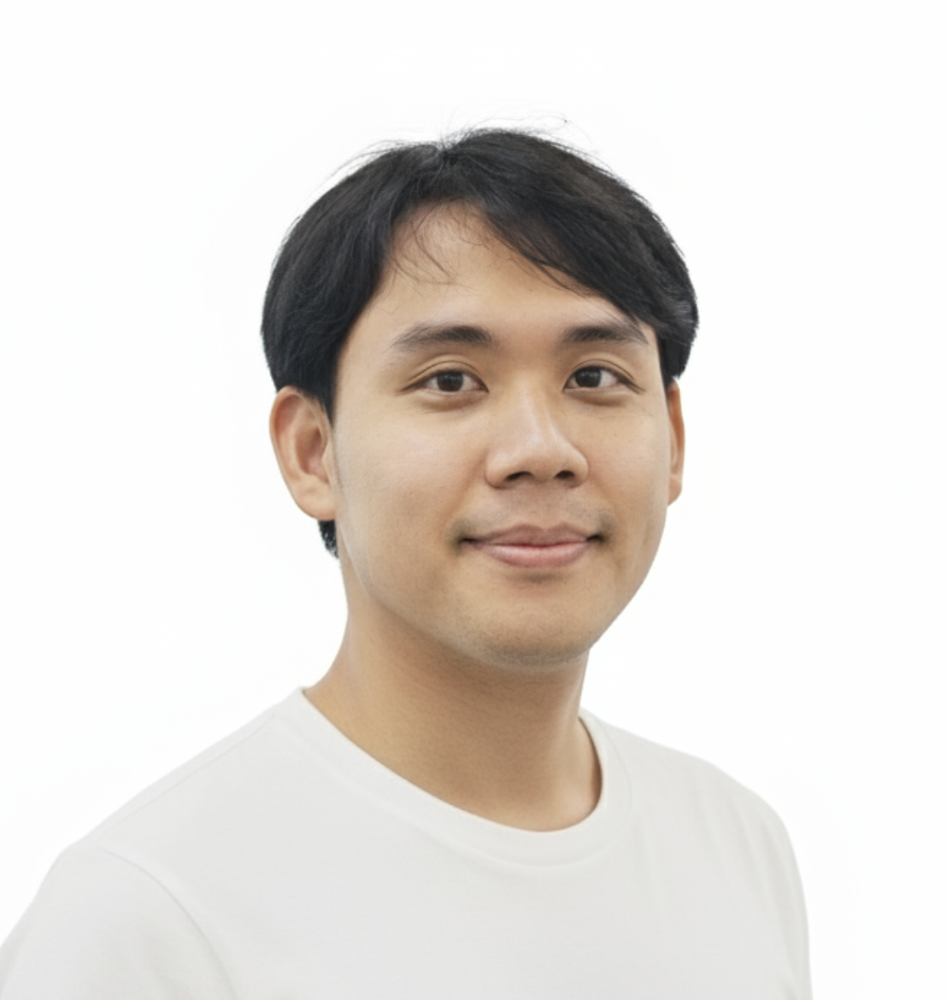
Dr. Teerapong Panboonyuen
Head of AI Research · MARSAIL Invited Panel Speaker
Session Topics
AI-powered automotive ecosystems
Computer vision for damage assessment
Intelligent claims automation
Future-ready mobility intelligence
MARSAIL's presence at AutoTech 2026 demonstrates our commitment to bridging academic AI research and production-grade automotive industry solutions.
AutoTech Aftermarket Summit 2026BITEC BangkokMARSAIL AI LAB
Press & Media Coverage
📰 trusted by the press
Our work has been featured by leading technology, finance, and business media, reflecting strong external trust in MARSAIL's real-world AI research and deployment.
Independent media coverage provides external validation of MARSAIL's research quality, technical rigor, and industry relevance.
Invited Academic Talk
🎓 from lab to lecture hall
Beyond publications and media recognition, MARSAIL actively contributes to the academic community through invited talks that bridge mathematical foundations, modern vision transformers, and real-world insurance AI systems.
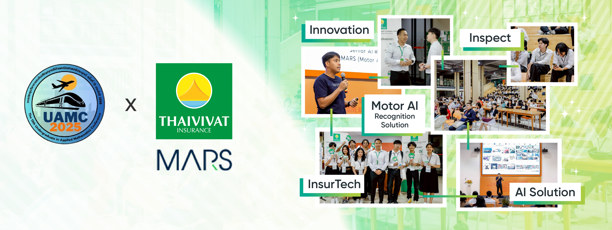
Invited Guest Speaker · 2025
13th Undergraduate in Applied Mathematics Conference (UAMC 2025)
Dr. Teerapong Panboonyuen delivered a talk titled "Mathematics Foundations of Vision Transformer in Car Insurance AI", highlighting how linear algebra, attention mechanisms, and optimization theory underpin modern Vision Transformers in large-scale automotive insurance systems.
A comprehensive, production-driven handbook presenting the foundations, architectures, and deployment paradigms of artificial intelligence for motor insurance.
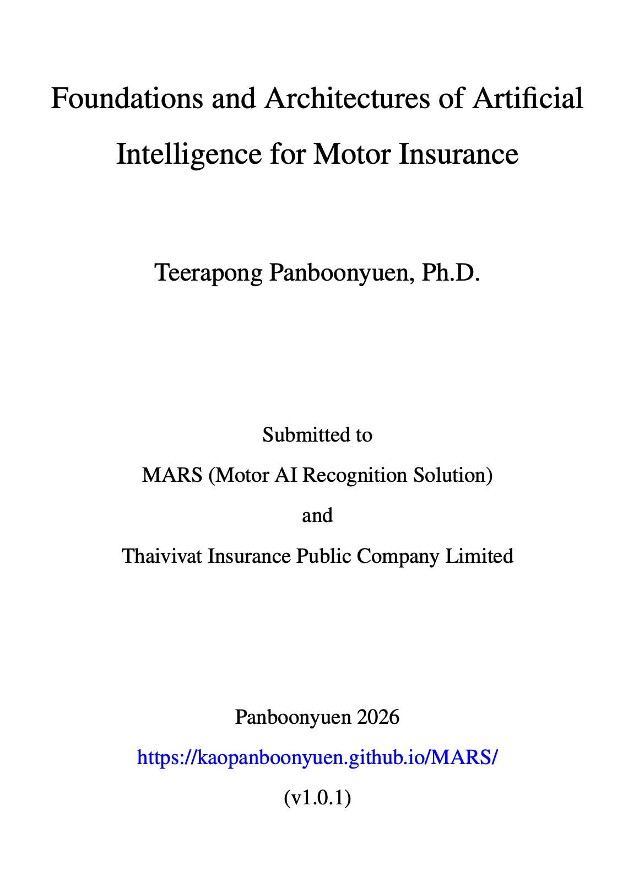
Research Handbook · 2026 · 173 Pages
Foundations and Architectures of AI for Motor Insurance
Introduces a vertically integrated AI paradigm unifying computer vision, multimodal reasoning, and production-scale MLOps into a single intelligence stack.
Developed from large-scale deployment in Thailand, demonstrating how domain-adapted transformers can be translated into reliable, high-stakes industrial applications.
Domain-specific transformer systems for structured vehicle understanding and multimodal intelligence.
🚗 Motor Insurance AI
End-to-end automation of claims, damage analysis, and underwriting workflows.
⚙️ Production Systems
Scalable MLOps pipelines designed for real-world nationwide deployment.
🌏 Thailand Deployment
Designed, built, and rigorously validated under real-world operational constraints.
MARSAIL Research Highlights (2023–2026)
🧠 the full list ↓
MARSAIL drives the next generation of automotive AI through foundational transformer research led by Dr. Kao (Teerapong Panboonyuen). Our work unifies damage-centric computer vision, knowledge distillation at scale, and document intelligence into deployable systems.
01
MARS
🌌 Mask Attention Refinement with Sequential Quadtree Nodes
Introduced the Sequential Quadtree Attention mechanism for precise instance-level damage mask refinement. Demonstrated clear gains over Mask R-CNN, PointRend, and Mask Transfiner — MARSAIL's first official research publication.
🚗 Transformers for Automotive Damage Evaluation (Teacher Model)
Large-scale transformer backbone delivering rich contextual embeddings, multi-level localization, and robust attention signals — the foundational teacher model for downstream automotive AI systems.
Distills ALBERT's knowledge into a lightweight, production-ready model delivering real-time, fine-grained damage segmentation optimized for insurance workflows and automated repair pipelines.
Integrates deformable attention with retrieval-augmented generation to achieve human-level robustness in real-world automotive documents — claims, invoices, and inspection reports.
🎓 Final Research Series (2026) — The concluding academic contributions of MARSAIL Lab
05
Deconstructing GPT Geopolitical Bias with Fairness
🌏 in the 2025 Thailand–Cambodia Border Conflict
✅ Accepted — ICCAI 2026 · Okinawa, Japan
Investigates stance distortion in LLMs during geopolitically sensitive events. Introduces GeoFACT, a counterfactually calibrated bias mitigation framework, plus 10K-THAC, a 10,000-statement multilingual dataset.
Research Lead: Dr. Teerapong Panboonyuen
06
DABertAttn
🧠 Diversity-Aware BertAttention for Reducing the Systematicity Gap in VQA
✅ Accepted — ICCAI 2026 · Okinawa, Japan
Reduces the systematicity gap by 44% on Minimal splits and 60% on Complex splits, demonstrating that architectural sensitivity to attribute diversity enhances compositional generalization beyond data scaling alone.
Research Lead: Dr. Teerapong Panboonyuen
07
CAREF
🧩 Calibration-Aware Regularization for Explanation Faithfulness Without Rationale Supervision
📝 Under Review — ACL Rolling Review
Integrates entropy-guided learning with sparsity-aware regularization to jointly optimize prediction accuracy and interpretability. Outperforms LoRA and AdaLoRA in low-resource and fully supervised settings.
Research Lead: Dr. Teerapong Panboonyuen
08
HOMEY
🏠 Heuristic Object Masking with Enhanced YOLO for Property Insurance Risk Detection
✅ Accepted — arXiv 2026 · March 19, 2026
Detects 17 property risk categories including structural damages and maintenance neglect. Leverages risk-aware loss calibration to balance class skew and severity weighting for scalable AI-driven property insurance workflows.
🚙 Foundations and Architectures of AI for Motor Insurance
✅ Accepted — arXiv 2026 · March 19, 2026
Formalizes a vertically integrated AI paradigm for end-to-end vehicle risk assessment and claims processing, introducing domain-adapted transformer architectures for structured visual understanding and multimodal document intelligence.
@inproceedings{panboonyuen2023mars,
title = {MARS: Mask Attention Refinement with Sequential Quadtree Nodes},
author = {Panboonyuen, Teerapong},
booktitle = {ICIAP},
address = {Università degli Studi di Udine, Italy},
pages = {28--38},
year = {2023},
publisher = {Springer Nature Switzerland}
}
@article{panboonyuen2025albert,
title = {ALBERT: Advanced Localization and Bidirectional Encoder Representations from Transformers for Automotive Damage Evaluation},
author = {Panboonyuen, Teerapong},
journal = {arXiv preprint arXiv:2506.10524},
year = {2025}
}
@article{panboonyuen2025slick,
title = {SLICK: Selective Localization and Instance Calibration for Knowledge-Enhanced Car Damage Segmentation},
author = {Panboonyuen, Teerapong},
journal = {arXiv preprint arXiv:2506.10528},
year = {2025}
}
@inproceedings{marsail2025dota,
title = {DOTA: Deformable Optimized Transformer Architecture for End-to-End Text Recognition with RAG},
author = {N., N. and Panboonyuen, Teerapong},
booktitle = {KST},
pages = {301--306},
year = {2025},
publisher = {IEEE}
}
@inproceedings{marsail2026geofact,
title = {Deconstructing GPT Geopolitical Bias with Fairness in the 2025 Thailand--Cambodia Border Conflict},
author = {N., N. and Panboonyuen, Teerapong},
booktitle = {ICCAI},
address = {Okinawa, Japan},
year = {2026}
}
@inproceedings{marsail2026dabertattn,
title = {DABertAttn: A Diversity-Aware BertAttention for Reducing the Systematicity Gap in VQA},
author = {N., N. and Panboonyuen, Teerapong},
booktitle = {ICCAI},
address = {Okinawa, Japan},
year = {2026}
}
@article{marsail2026splint,
title = {CAREF: Calibration-Aware Regularization for Explanation Faithfulness Without Rationale Supervision},
author = {N., N. and Panboonyuen, Teerapong},
journal = {arXiv preprint arXiv:2605.27835},
year = {2026},
note = {Under Review: ACL Rolling Review}
}
@article{panboonyuen2026homey,
title = {HOMEY: Heuristic Object Masking with Enhanced YOLO for Property Insurance Risk Detection},
author = {Panboonyuen, Teerapong},
journal = {arXiv preprint arXiv:2603.18502},
year = {2026}
}
@article{panboonyuen2026autoai,
title = {AutoAI-Motor: Foundations and Architectures of AI for Motor Insurance},
author = {Panboonyuen, Teerapong},
journal = {arXiv preprint arXiv:2603.18508},
year = {2026}
}
🧠 Want to Know More About MARSAIL?
Explore how our lab is shaping the future of automotive AI, blending deep vision models with smart insurance tech.
We build and train AI models using real-world car images and insurance data to support automated inspection, claims, and decision-making at scale.
🤍 A Note of Gratitude
MARSAIL was never built by algorithms alone — it was shaped by people.
To every team member who annotated data with patience, engineered systems with precision, and contributed effort behind the scenes — thank you.
And to myself — for having the courage to start, the discipline to sustain, and the vision to complete this initiative over four remarkable years — this chapter stands as proof that independent conviction, when paired with persistence, can build something real.
MARSAIL will always represent belief, resilience, and the pursuit of intelligent systems built with purpose.
— Dr. Teerapong PanboonyuenFounder & Research Architect (January 2022 – July 2026)
The founding generation who helped shape MARSAIL from its earliest days — under the direct lead of Dr. Teerapong Panboonyuen.
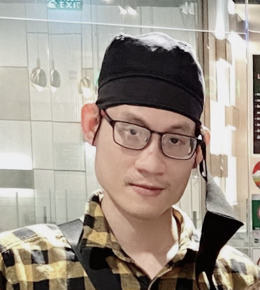
Alumni
Chukit Ruanpeng (Chu)
ชูกิจ เรือนเป็ง (ชู)
AI Data Engineer
2022 – 2023
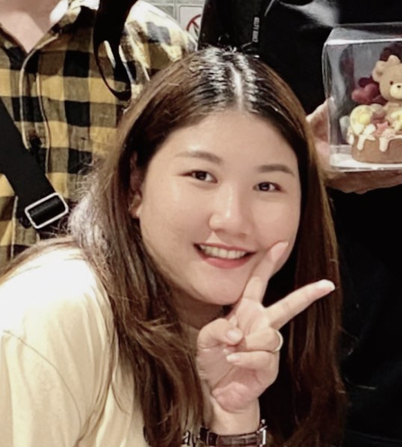
Alumni
Natthakan Phromchino (Pin)
ณัฐกานต์ พรหมชิโน (ปิ่น)
AI Data Annotator
2022 – 2023
Alumni
Pitchayaphorn Tangngam (Fah)
พิชญาภรณ์ ตั้งงาม (ฟ้า)
AI Data Annotator
2022 – 2023
✨ Once a MARSAIL member, always part of the story. Thank you for being part of the foundation.
MARSAIL Open Lab — Interns
MARSAIL is an open lab welcoming students who want to learn and grow in Automotive AI. Every intern is mentored directly by Dr. Teerapong Panboonyuen (Dr. Kao) — building real systems, real research, and real experience from day one.
🎓 MARSAIL AI Lab · Open to Students · Automotive AI
Advisor · MARSAIL Open Lab
Teerapong Panboonyuen (Kao)
ธีรพงศ์ ปานบุญยืน (เก้า)
Head of AI · Senior Research Scientist Founder & Research Architect, MARSAIL
Computer VisionTransformer ResearchAutomotive AI
"Every great researcher starts as a curious student. MARSAIL Open Lab exists so that curiosity has a place to become capability."
Advisees
Intern
Kasidit Sermsri (Ohm)
กษิดิศ เสริมศรี (โอม)
AI Research Intern
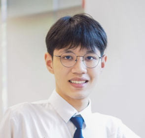
Intern
Chotanansub Sophaken (Chokun)
โชติอนันต์ทรัพย์ โสภาเคน (โชกุน)
AI Research Intern
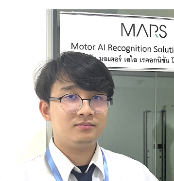
Intern
Kantapong Vongpanich (Third)
กันตพงศ์ วงศ์พานิชย์ (เติร์ด)
AI Research Intern
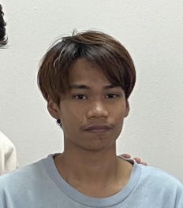
Intern
Naruebet Pholsilp (Beauty)
นฤเบศ พลศิลป์ (บิวตี้)
AI Research Intern
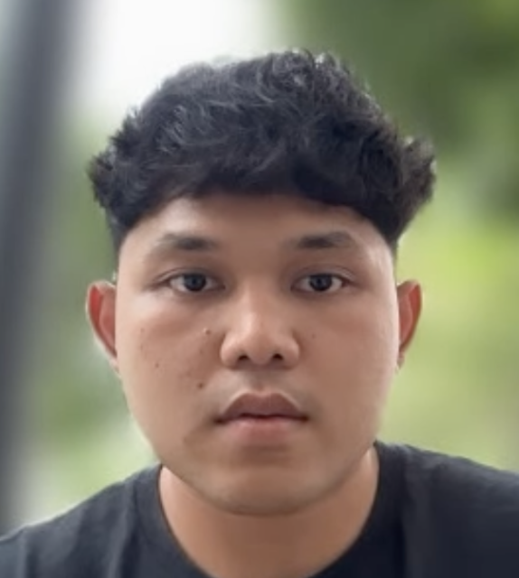
Intern
Yossaphan Kaenwong (Merge)
ยศพันธ์ แก่นวงษ์ (เมิร์จ)
AI Research Intern
Intern
Phantakan Mongkol (Petch)
พันธกานต์ มงคล (เพชร)
AI Research Intern
💡 MARSAIL is an open lab. We believe in nurturing the next generation of AI practitioners. Students passionate about computer vision, automotive intelligence, and real-world AI systems are always welcome to learn, build, and grow alongside our team.
Our Trusted Sponsors & Partners
🤝 thank you
We are grateful for the invaluable support of our sponsors, partners, and collaborators whose investment and belief in our mission empower MARSAIL to push boundaries in automotive AI.
Four years and seven months as Head of AI. From a small deep-tech team to award-winning research, real-world AI systems, and a stage at AutoTech 2026 — this was a once-in-a-lifetime journey, and it was never a solo one.
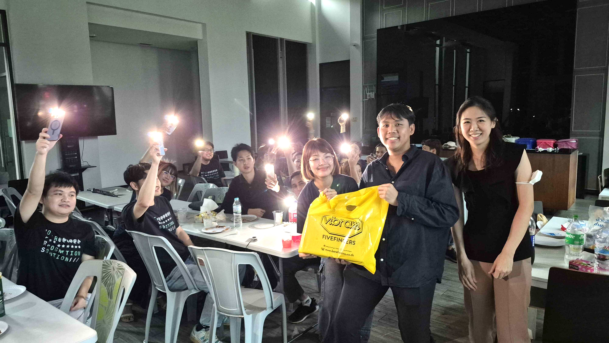
Last Day · MARSAIL · 2026
A Thousand Little Lights ✨
On my final day, the whole team raised their phone flashlights into the night. No speeches needed — that glow said everything about the people I was lucky to build with. Thank you for the late-night debugging, the shared wins, and the friendships that will outlast any job title.
And yes — a pair of Vibram FiveFingers as a parting gift. Ready for the next step, quite literally. 👣
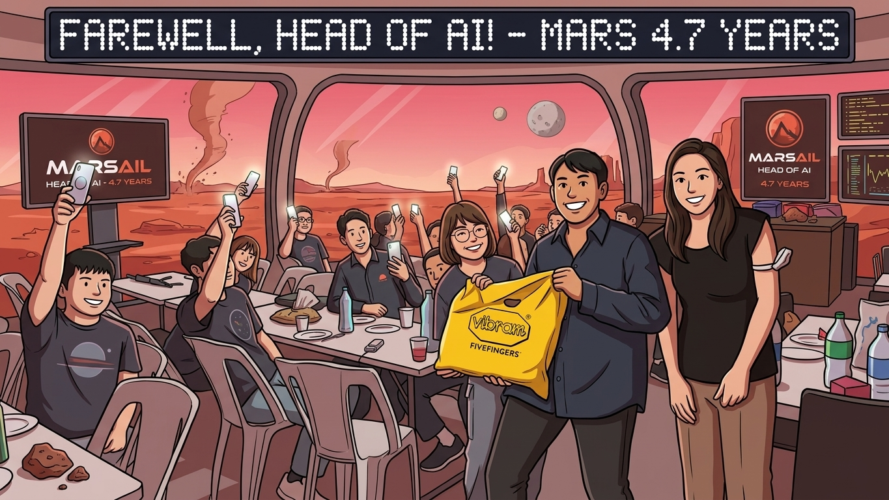
MARS Edition · 4.7 Years
Same Team, Different Planet 🪐
Because we are MARS, even the farewell had to be out of this world. Same faces, same smiles — just with a red-planet sky behind us.
Tenure4.7 Years
RoleHead of AI
HighlightsICIAP 2023 · AutoTech 2026
To everyone at MARSAIL — teammates, partners, and friends: thank you for being the best chapter of my career so far. The mission continues, and I'll be cheering from the sidelines. 💛
Fun Facts About MARSAIL
🌟 the story behind the lab
🇺🇸 Fun Facts — English Version
MARSAIL is the dedicated Artificial Intelligence Laboratory under
MARS (Motor AI Recognition Solution).
While MARS was founded earlier as a tech company, the AI-focused MARSAIL was later established and shaped by
Dr. Teerapong Panboonyuen (Dr. Kao),
who leads the AI Research & Development division.
After completing his
Ph.D. at Chulalongkorn University,
Dr. Kao joined MARS in January 2022 to spearhead the next era of AI innovation.
Upon reviewing the existing "first-generation AI system" from 2021, he made a decisive move —
he removed the entire legacy system and rebuilt everything from the ground up.
This total reboot resulted in the new
MARS model
(Mask Attention Refinement with Sequential Quadtree Nodes), inspired partly by the company name.
It became MARSAIL's first official research publication and was presented on the international stage at
ICIAP 2023 in Udine, Italy.
From 2022–2026, under Dr. Kao's leadership, MARSAIL evolved into a next-generation AI research lab,
producing advanced models including the flagship transformer
ALBERT.
Today, MARSAIL powers innovation across
car insurance, damage analytics, intelligent document understanding,
and AI assistance for vehicle damage assessment.
หลังจบ
ปริญญาเอกจากจุฬาลงกรณ์มหาวิทยาลัย
ดร.เก้าเริ่มเข้ามาทำงานที่ MARS ในช่วง มกราคม 2022 เพื่อสานต่องานพัฒนา AI จากทีมรุ่นแรกในปี 2021
แต่แทนที่จะปรับแต่งแบบเดิม เขากลับตัดสินใจครั้งใหญ่ —
ลบระบบ AI เดิมทั้งหมด และสร้างระบบใหม่ตั้งแต่ศูนย์
เพื่อให้ทันสมัย แข็งแรง และรองรับงานระดับอุตสาหกรรม
โมเดลใหม่ที่เกิดจากการรีบูตนี้คือ
MARS
(Mask Attention Refinement with Sequential Quadtree Nodes) ซึ่งสอดคล้องกับชื่อบริษัท
และได้เป็นงานวิจัยลำดับแรกของห้องแลป MARSAIL ที่ถูกนำเสนอในเวทีนานาชาติ
ICIAP 2023 ณ ประเทศอิตาลี
ตั้งแต่ปี 2022–2026 ดร.เก้า ได้พัฒนา MARSAIL ให้เติบโตเป็นห้องวิจัย AI ระดับแนวหน้า สร้างโมเดลเด่น เช่น
ALBERT
ที่เป็นหัวใจของงานด้านประกันภัยรถยนต์ การประเมินรอยความเสียหาย
การทำความเข้าใจเอกสารอัจฉริยะ และ
AI assistance สำหรับงานประเมินราคาความเสียหายของรถยนต์ผลักดันอุตสาหกรรมยานยนต์ไทยให้ล้ำหน้าด้วยพลังของ AI